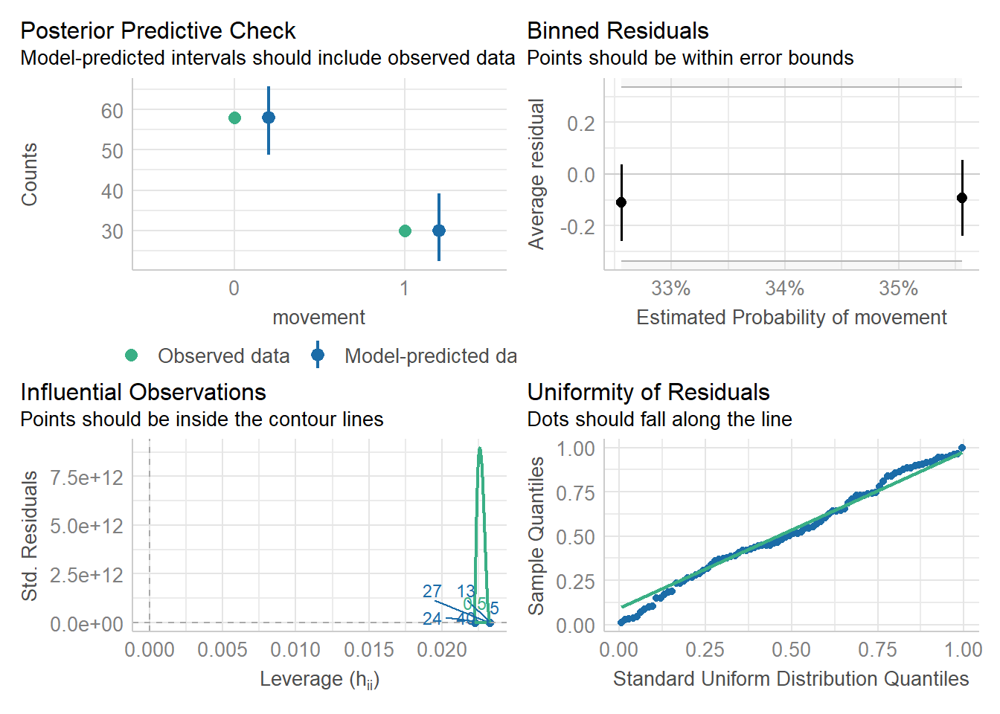

The past several chapters/lessons have focused on linear models. Here we explore options for analysis when linear model assumptions are not met.
Sticking with the linear model
Linear models are useful for a number of reasons. They are a great way to unify most/many tests from classical statistics. In fact, most of the ranked tests we’ve developed can actually be run as linear models when n >15. For example, we can go back to our Wilcox-Mann Whitney U tests (for 2 populations) and Kruskal-Wallis (for 3+) from the comparing means among groups chapter and note the outcome from a wilcox.test
Wilcoxon rank sum test with continuity correction
data: Sepal.Length by Species
W = 526, p-value = 5.869e-07
alternative hypothesis: true location shift is not equal to 0
is very close to a linear model predicting the signed rank of the data
Anova Table (Type III tests)
Response: signed_rank(Sepal.Length)
Sum Sq Df F value Pr(>F)
(Intercept) 64872 1 102.378 < 2.2e-16 ***
Species 20967 1 33.089 1.003e-07 ***
Residuals 62098 98
---
Signif. codes: 0 '***' 0.001 '**' 0.01 '*' 0.05 '.' 0.1 ' ' 1
In fact, we could run simulations and show that p values from these 2 approaches are highly correlated (now you know what that means) with a \(\beta\) of almost 1 (from Lindelov (n.d.)).
Warning: The `<scale>` argument of `guides()` cannot be `FALSE`. Use "none" instead as
of ggplot2 3.3.4.
Linear models are also extremely robust. Consider the basic assumptions of a linear model
\[
\epsilon \approx i.i.d.\ N(\mu,\sigma)
\]
Although the residuals are meant to be homoscedastic (equal or constant across all groups), it turns out the model is robust of when the largest group variance is 4-10x larger than the smallest group variance and sample sizes are approximately equal (Blanca et al. 2018; Fox 2015; A. F. Zuur, Ieno, and Elphick 2010), though highly uneven group sizes begin to cause issues (Blanca et al. 2018).
Similarly, non-normal data is not an issue. This is partially because the assumptions are focused on residuals, but also because the procedure is highly robust (Blanca et al. 2017). This finding further supports the graphical consideration of assumptions , especially since many tests for normality are conservative (samples are almost never perfectly normal, and slight deviations are easier to pick up with larger sample sizes despite the fact the central limit theorem suggests this is when the issue is least important) (A. F. Zuur, Ieno, and Elphick 2010; Shatz 2023).
These issues have led some authors to argue violations of the linear model assumptions are less dangerous than trying new, and often less-tested, techniques that may inflate type I error rates (Knief and Forstmeier 2021; D. I. Warton et al. 2016). However, new techniques (or sometimes old techniques that are new to a given field) may be more appropriate when assumptions are clearly broken (D. Warton and Hui 2010; Reitan and Nielsen 2016; Geissinger et al. 2022). In this section we explore common-ish approaches for analyzing data when the assumptions of a linear model are broken. Our goal here is to introduce these methods. Each could be the focus of their own class, book, or much larger study. Fortunately most can be viewed as extensions to our existing knowledge, although many of the assumptions and techniques for them are less developed/still being argued about.
The various assumptions related to linear models may be prioritized on their relative importance. One such order is provided (roughly) by Gelman and Hill (2006).
Model validity
As noted in the multiple regression chapter, we only should investigate relationships we have a mechanism to explain
Linear relationship and additive effects of predictor variables
Errors are
independently distributed
identical (homoscedastic)
follow a normal distribution
Many datasets will violate multiple of these assumptions simultaneously, so addressing issues is often best resolved by understanding why this is happening.
Linear relationship is inappropriate
A central (and often overlooked assumption) of linear models is that the relationship between the predictors and the outcome variable is linear and addtive. When the relationship is not linear, the resulting residuals are often not appropriately distributed as well.This may occur for a number of reasons. The outcome may not actually be continuous (e.g. counts. proportions) or may be related to the predictors in different ways (e.g., logarithmic). When this occurs, several options exist.
What’s linear anyway?
To be clear, the linear model only focuses on the linear and additive relationship between the predictors and the outcome variable (this will become more important/obvious later in this section!). The model doesn’t know what the variables are. For that reason, we can add predictor variables to a model that are squares or cubes of predictors, or we can transform the outcome variable. We just the \(Y = X\beta\) relationship to be additive and linear.
Transform the data (least advisable, sometimes)
One option is to transform the data (typically focusing on the dependent variable) so that the resulting variable meets the linear model assumptions (and thus uses the strengths of linear models that we noted above). As shown above, our rank-based approaches are using a similar method (not technically the same, but it works for larger sample sizes). This approach was often used in the past(e.g., arc-sin transforms of proportion data D. Warton and Hui (2010)) and supported by various approacheac. For example, Box-Cox transformation helped researchers find the best way to transform data to reduce issues with the distribution of residuals; this method also tended to impact linearity and differences in variances.
Two things should be noted regarding this approach and transformations in general:
The Box-Cox approach requires a model - it still focused on transforming data so that residuals met assumptions. Data should not be transformed before model assumptions are analyzed to ensure it is necessary. For example, highly skewed data may arise due to unequal sample sizes (which may pose their own problems, but not outright). Non-normal data, however, may have normalized residuals. However, normal data (or transformed data) does typically lead to normal residuals, so if residuals are not normal transformations may help.
set.seed(8)example_skewed <-data.frame(Population=c(rep("a",40),rep("b", 30),rep(letters[3:4], each=15)), Growth =c(rnorm(40,1),rnorm(30, 4),rnorm(15, 7),rnorm(15,10)))library(ggplot2)ggplot(example_skewed,aes(x=Growth))+geom_histogram()+labs(y="Some value",title="Example of skewed data appearing due to unequal sample size")
`stat_bin()` using `bins = 30`. Pick better value with `binwidth`.
Anova Table (Type III tests)
Response: Growth
Sum Sq Df F value Pr(>F)
(Intercept) 38.75 1 32.436 1.344e-07 ***
Population 1007.71 3 281.175 < 2.2e-16 ***
Residuals 114.69 96
---
Signif. codes: 0 '***' 0.001 '**' 0.01 '*' 0.05 '.' 0.1 ' ' 1
The transformed variable is now linear in respect to the predictors. This highlights the actual assumption of the model. Similarly, higher-terms (squares, cubes, etc) may be added to a linear model. The model does not care what the data represent - it only focuses on if linear relationships exist among them.
Transformations can make model interpretation and prediction difficult.
If the decision is made to transform the data, several approaches exist. Some are driven by the distribution of the data, and all depend on it. For example, log and related root transformations are useful for right-skewed data, but some can only be carried out for non-negative (e.g., square root) or strictly positive (e.g., log) values. To address this for log transformations, a small value is often added to 0 measurements.
Let’s data (not residuals) to show what different types of data look like and consider possible fixes (always fit a model first for real analysis!). For example, we can return to our right-skewed blue jay data from the summarizing data chapter(target=“_blank)(idea from (Hunt, n.d.)) .
set.seed(19)blue_jays <-round(rbeta(10000,2,8)*100+runif(10000,60,80),3)ggplot(data.frame(blue_jays), aes(x=blue_jays)) +geom_histogram( fill="blue", color="black") +labs(title="Weight of Westchester blue jays",x="Weight (g)",y="Frequency")
`stat_bin()` using `bins = 30`. Pick better value with `binwidth`.
Note the right-skewed data shows a convex curve on the Q-Q plot.
qqnorm(blue_jays)qqline(blue_jays)
To help you understand Q-Q plots, remember they are comparing the relative spread of data (quantiles) from a target and theoretical distribution. For right-skewed data, points are shifted right (both smallest and largest observations are larger than you would expect from a normal distribution).
Conversely, we could also return to our left-skewed cardinal data
`stat_bin()` using `bins = 30`. Pick better value with `binwidth`.
is under-dispersed due the shape of the distribution.
qqnorm(woodpeckers)qqline(woodpeckers)
Under-dispersion could also happen if data are bounded (e.g., by practicality or due to a measurement issue). Over-dispersion can similarly occur if the model does not account for variability (e.g., missing factors, non-linear relationship) and/or outliers, which might be related to the underlying form of the data (Payne et al. 2017) (more to come on this). In this way, over- and under-dispersion relate to both the linear relationship.
Generalized linear model approach: Different data, different approach
The linear relationship may be inappropriate because our data doesn’t fit it! For example, if we are modeling proportions, estimates less than 0 or below 1 do not make sense, but a linear model doesn’t account for that. The same issues arise for proportions and binary outcomes. While we may be able to transform the response variable to make it linear, another option is to translate the link function.
Although we haven’t fully explained it yet, a linear model contains three components. There is always a random component that focuses on the distribution of the data. There is also a systematic component, where a number of covariates and data points produce an estimate. Finally, there is the link function, which connects that estimate to the data distribution (this maintains the linearity of the model).
Notice this means the link connects to the distribution of the data, not the data itself. So far we have focused on the mean of the data, and the estimate is the mean, so the link has been implied. We can generalize this setup to include other distributions in the exponential family (and now others (“Applied Regression Analysis and Generalized Linear Models” 2022, ch. 15)).
While we won’t develop all the math, exponential family distributions all have a canonical parameter (the mean for Gaussian, or normal, data) and a dispersion parameter (the variance for normal data). Different distributions have different relationships between these two parameters. For normal data, there is no relationship, so the variance is constant. This is not true for other families.
We can specify other families using generalized linear models(which are different than general linear models, which is another term used to describe our “regular” linear models). These models are also known as glm or glim (we’ll use the glm jargon here). GLM make different assumptions (though everyone does not agree on what they are!). While we still need independence of the residuals (or some extension, see below), they no longer need to be normally distributed (A. Zuur, Ieno, and Smith 2007, 86–87; A. Zuur et al. 2009, sec. 9.8.3) (though normality may hold at large sample sizes for Pearson (Agresti 2007, 87) or deviance (Montgomery, Peck, and Vining 2012, sec. 13.4.4) residuals, and some authors argue normality is required for testing (Feng, Li, and Sadeghpour 2020) ) or constant (homogeneity). As noted above, non-Gaussian families don’t assume a constant variance, so homogeneity assumptions would not be appropriate. However, we need to ensure the correct family (and thus mean-variance link) is chosen. In general, plotting the residuals against
the predicted values
each explanatory variable in model
each explanatory not retained/used in model
against time and space
will be useful. Any patterns may suggest missing predictors or lack of independence/correlation among measurements. Patterns in the residuals may also indicate the incorrect family has been chosen (A. Zuur et al. 2009, sec. 9.8.4)
What are residuals for a GLM?
Residuals for a Gaussian/normal glm (what we’ve been doing) are easy to calculate. We simply subtract the estimate for each data point (which is the average for similar observations!) from the observed. However, though these raw or response residuals exist for GLM, they rarely make sense. Variance may increase with mean for some distributions, for example, or outcomes may be binary.
To account for this, we could divide the residuals by the square root of the variance. This normalizes the residuals and leads to Pearson residuals. Another option is based on something called deviance. Deviance is similar to sums of squares but based on likelihood (which we shortly see is what we use to test for significance in GLM); it can also be considered the generalized form of variance or residuals sums of squares. It is calculated as the difference of log-likelihods between the focal model and the saturated model. Deviance residuals consider how important each point is to the overall deviance. You can also compare the deviance of a model to a perfect fit (no deviance/saturated) model and an intercept-only model (worst fit, DO) and generate a pseudo-R2 measure using the formula
\[
1-\frac{D}{D_O}
\]
There are numerous types of GLMs. Here we outline some of the more common ones. Regardless of which ones you use, moving beyond the normal distribution means the residuals do not need to be normally or identically distributed
Logistic regression
Logistic regression focused on yes/no outcomes; data can be a single answer (Bernoulli) or a collection (binomial).
Beta regression
Beta regression focuses on true porpiton data.
Poisson regression
Poisson regression focuses on count-based data.
Non-linear options
Data are not independent
In respect to predictors
A major issue for linear models is when predictors are co-linear. Mathematically speaking, perfect collinearity occurs when any column of the design (X) matrix can be derived by combining other columns. Perfect collinearity will lead to a message noting singularity issues, which is R’s way of telling you the matrix isn’t invertible (which it has to be to solve the equation).
Even partial collinearity will lead to an increase in Type II errors (A. F. Zuur, Ieno, and Elphick 2010). To put it simply, partitioning variance among related predictors is hard. For this reason, a few approaches may be used.
Check for issues
The first step is identifying issues. From the outset, relationships among predictor variables can be assessed using the pairs function in R. If two variables are highly correlated (r2 > .8 is a general limit), only one should be included in the model. Similarly, variance inflation factors (vif) can be assessed for the final and other models to consider this issues (all this is covered in the previous chapter that introduces multiple regression.
In respect to measured outcomes
When outcome variables are linked together, a few options exist. Note this issue may be obvious from checks of assumptions, but it also may be due to experimental design.
Consider this example. In order to investigate impacts of climate stress on oysters, specimens are placed in individual tanks and held at normal summer (calculated using recent data) temperature or at temperatures predicted under 2 IPCC — Intergovernmental Panel on Climate Change- scenarios. Oysters were also exposed to predator cues by dropping in water from tanks with 0, low (.25/m2), or high (2/m2) predators. After two months changes in oyster shell length (growth) was measured. Twenty-five oysters were measured for each treatment combination.
You hopefully recognize this as a factorial ANOVA experiment that you know how to analyze. If you need a reminder, see the chapter on ANOVA extensions. Experiments like this are odd, however, given the space they require. It is far more common to put lots of organisms in a single container given space and costs. However, this means our measurements are connected; remember blocking and paired tests)?
There are several ways to deal with this. Here we explore each for our oyster example.
Ignore it (don’t do this!)
First, let’s ignore the lack of independence. This is not an option, but it let’s you see the impact.
average_analysis <-lm(growth~predator_cue*temperature, averaged_experiment)Anova(average_analysis, type ="III")
Error in Anova.lm(average_analysis, type = "III"): residual df = 0
but that leads to an issue! Since we only get 9 average outcomes and our model requires 10 degrees of freedom (consider why), we are left with no “noise” to make the denominator for our F ratio! Even when this doesn’t happen, you have reduced your data to a much smaller number of points and are not getting credit for all your work! This is a good example of why you should analyze simulated data before you run an experiment, but there are other options.
#####Blocking
The blocking approach we’ve already covered works might seem appropriate here.
blocking_analysis <-lm(growth~predator_cue*temperature+container, experiment)Anova(blocking_analysis, type ="III")
Error in Anova.III.lm(mod, error, singular.ok = singular.ok, ...): there are aliased coefficients in the model
but its not? Why? This error means now our model matrix has collinearity issues. WE can actually see where
though the output is confusing. In general, the issue here is each unit only contributes to one level of other traits..so if we know the average impact of ambient temperatures, for example, and the impacts in two of the treatments that were held at that temperature, we can predict the other. If instead each unit contributed to multiple levels, like in feather experiment) this isn’t an issue.
Random effects
Our final option takes a new approach. It considers the units we measured as simply a sample from a larger population. Using that background, we use the information from the units to consider the distribution of sample effects we might see. The impact of unit is then considered a random-effect. For this to work, you probably want 5+ levels of the unit variable. This is because we are using the means to estimate variance (confusing?). For factors with <5 levels, random effects likely offer no benefit (Gomes 2022).
When models contain fixed (what we’ve done before) and random effects, we call them mixed-effects models. Two common packages for carrying out this analysis in R are the nlme and lme4 packages. We will focus on the lme4 package here. Random effects can be entered in the lmer (linear mixed-effects regression) function and specified as (1|Grouping Unit). One nice thing about lme4 is it will handle crossed and random effects on it’s own as long as you don’t repeat unit names. For example, we could note
Once built, we need to consider assumptions. The main assumption we add here is that the random effects are normally distributed. This should be checked at each level of grouping. The check_mixed_model function (provided below) offers an automated approach for one level (also known as one-way random effects).
check_mixed_model <-function (model, model_name =NULL) {#collection of things you might check for mixed modelpar(mfrow =c(2,3))if(length(names(ranef(model))<2)){qqnorm(ranef(model, drop = T)[[1]], pch =19, las =1, cex =1.4, main=paste(model_name, "\n Random effects Q-Q plot"))qqline(ranef(model, drop = T)[[1]]) }plot(fitted(model),residuals(model), main =paste(model_name, "\n residuals vs fitted"))qqnorm(residuals(model), main =paste(model_name, "\nresiduals q-q plot"))qqline(residuals(model))hist(residuals(model), main =paste(model_name, "\nresidual histogram"))}
check_mixed_model(mixed_analysis)

Here we have only 9 levels of units, so the spread is not perfect. However, we also know each of these is itself an average,and averages should be normally-distributed under the central limith theorem, so we can plow ahead.
We can consider the outcome using our summary command - note the output denotes we have 225 observations and 9 grouping levels.
summary(mixed_analysis)
Linear mixed model fit by REML ['lmerMod']
Formula: growth ~ predator_cue * temperature + (1 | container)
Data: experiment
REML criterion at convergence: 631.3
Scaled residuals:
Min 1Q Median 3Q Max
-2.68605 -0.79915 -0.02646 0.70023 2.72393
Random effects:
Groups Name Variance Std.Dev.
container (Intercept) 4.6171 2.1487
Residual 0.9517 0.9755
Number of obs: 225, groups: container, 9
Fixed effects:
Estimate Std. Error t value
(Intercept) 0.78934 2.15758 0.366
predator_cuenone 1.28982 3.05129 0.423
predator_cuenormal 0.92308 3.05129 0.303
temperatureelevated_scenario1 0.03073 3.05129 0.010
temperatureelevated_scenario2 2.06547 3.05129 0.677
predator_cuenone:temperatureelevated_scenario1 0.46256 4.31517 0.107
predator_cuenormal:temperatureelevated_scenario1 -0.24377 4.31517 -0.056
predator_cuenone:temperatureelevated_scenario2 -1.22466 4.31517 -0.284
predator_cuenormal:temperatureelevated_scenario2 -0.63903 4.31517 -0.148
Correlation of Fixed Effects:
(Intr) prdtr_cnn prdtr_cnr tmpr_1 tmpr_2 prdtr_cnn:_1 prdtr_cnr:_1
predatr_cnn -0.707
prdtr_cnrml -0.707 0.500
tmprtrlvt_1 -0.707 0.500 0.500
tmprtrlvt_2 -0.707 0.500 0.500 0.500
prdtr_cnn:_1 0.500 -0.707 -0.354 -0.707 -0.354
prdtr_cnr:_1 0.500 -0.354 -0.707 -0.707 -0.354 0.500
prdtr_cnn:_2 0.500 -0.707 -0.354 -0.354 -0.707 0.500 0.250
prdtr_cnr:_2 0.500 -0.354 -0.707 -0.354 -0.707 0.250 0.500
prdtr_cnn:_2
predatr_cnn
prdtr_cnrml
tmprtrlvt_1
tmprtrlvt_2
prdtr_cnn:_1
prdtr_cnr:_1
prdtr_cnn:_2
prdtr_cnr:_2 0.500
We can also still use Anova to get p-values. However, these are now calculated by default using likelihood-associated \(\chi^2\) tests.
Anova(mixed_analysis, type ="III")
Analysis of Deviance Table (Type III Wald chisquare tests)
Response: growth
Chisq Df Pr(>Chisq)
(Intercept) 0.1338 1 0.7145
predator_cue 0.1898 2 0.9095
temperature 0.6020 2 0.7401
predator_cue:temperature 0.1837 4 0.9960
You can also ask for F tests, but note the degrees of freedom associated with these tests is not clear. It’s somewhere between the “average” and “ignore” approach used above.
Anova(mixed_analysis, type ="III", test="F")
Analysis of Deviance Table (Type III Wald F tests with Kenward-Roger df)
Response: growth
F Df Df.res Pr(>F)
(Intercept) 0.1338 1 3230137 0.7145
predator_cue 0.0949 2 3230137 0.9095
temperature 0.3010 2 3230137 0.7401
predator_cue:temperature 0.0459 4 3230137 0.9960
Note this approach suggests we do not have enough data to reject the null hypothesis. Ignoring the linkages among data led to very different results. This issue (pseudopreplication) has been noted in ecology and other fields (Hurlbert 1984; Heffner, Butler, and Reilly 1996; Lazic 2010).
Errors are not equal among groups
Another option is to use weighted-least squares regression - this approach specifically helps when residuals are not evenly distributed among groups. For example, we could take the sdm_model (just as an example of use! it’s not needed here!) This approach assume you built the model and then noted an issue with heteroscedasticity. If so, we can calculate a weight for each residual that is based on its variance - below makes a value that increases with low variance.
If you compare the two models you notice slight differences - these are minimal here due to lack of differences in variance.
{r} summary(sdm_model) summary(sdm_model_wls)}
Why not just always do this? Because weighted least squares implicitly assumes we know the weights. We are actually estimating them, so small datasets may lead to bad estimates and outcomes.
Residuals are not normally distributed
A very common concern regarding linear models is normality. I list it first here due to how often I see it noted, but in fact this assumption is one of the least important (and the assumption is based on residuals, not data!). However, non-normal residuals are often (not always) connected to other issues, namely linearity, as noted above.
Combinining these
Next steps
These methods can be extended to other models that are used when linear model assumptions are not met, which is the focus of the next chapter.
References
Agresti, Alan. 2007. “Introduction to Categorical Data Analysis.”
Blanca, María J., Rafael Alarcón, Jaume Arnau, Roser Bono, and Rebecca Bendayan. 2017. “Non-normal data: Is ANOVA still a valid option?”Psicothema 29 (4): 552–57. https://doi.org/10.7334/psicothema2016.383.
———. 2018. “Effect of Variance Ratio on ANOVA Robustness: Might 1.5 Be the Limit?”Behavior Research Methods 50 (3): 937–62. https://doi.org/10.3758/s13428-017-0918-2.
Feng, Cindy, Longhai Li, and Alireza Sadeghpour. 2020. “A Comparison of Residual Diagnosis Tools for Diagnosing Regression Models for Count Data.”BMC Medical Research Methodology 20 (1): 175. https://doi.org/10.1186/s12874-020-01055-2.
Fox, John. 2015. Applied Regression Analysis and Generalized Linear Models. SAGE Publications.
Geissinger, Emilie A., Celyn L. L. Khoo, Isabella C. Richmond, Sally J. M. Faulkner, and David C. Schneider. 2022. “A Case for Beta Regression in the Natural Sciences.”Ecosphere 13 (2): e3940. https://doi.org/10.1002/ecs2.3940.
Gelman, Andrew, and Jennifer Hill. 2006. Data Analysis Using Regression and Multilevel/Hierarchical Models. 1st edition. Cambridge ; New York: Cambridge University Press.
Gomes, Dylan G. E. 2022. “Should I Use Fixed Effects or Random Effects When I Have Fewer Than Five Levels of a Grouping Factor in a Mixed-Effects Model?”PeerJ 10 (January): e12794. https://doi.org/10.7717/peerj.12794.
Heffner, Robert A., Mark J. Butler, and Colleen Keelan Reilly. 1996. “Pseudoreplication Revisited.”Ecology 77 (8): 2558–62. https://doi.org/10.2307/2265754.
Hurlbert, Stuart H. 1984. “Pseudoreplication and the Design of Ecological Field Experiments.”Ecological Monographs 54 (2): 187–211. https://doi.org/10.2307/1942661.
Knief, Ulrich, and Wolfgang Forstmeier. 2021. “Violating the Normality Assumption May Be the Lesser of Two Evils.”Behavior Research Methods 53 (6): 2576–90. https://doi.org/10.3758/s13428-021-01587-5.
Lazic, Stanley E. 2010. “The Problem of Pseudoreplication in Neuroscientific Studies: Is It Affecting Your Analysis?”BMC Neuroscience 11 (1): 5. https://doi.org/10.1186/1471-2202-11-5.
Montgomery, Douglas C., Elizabeth A. Peck, and G. Geoffrey Vining. 2012. Introduction to Linear Regression Analysis. 5th edition. Hoboken, NJ: Wiley.
Payne, Elizabeth H., James W. Hardin, Leonard E. Egede, Viswanathan Ramakrishnan, Anbesaw Selassie, and Mulugeta Gebregziabher. 2017. “Approaches for dealing with various sources of overdispersion in modeling count data: Scale adjustment versus modeling.”Statistical Methods in Medical Research 26 (4): 1802–23. https://doi.org/10.1177/0962280215588569.
Reitan, Trond, and Anders Nielsen. 2016. “Do Not Divide Count Data with Count Data; A Story from Pollination Ecology with Implications Beyond.”PLOS ONE 11 (2): e0149129. https://doi.org/10.1371/journal.pone.0149129.
Shatz, Itamar. 2023. “Assumption-Checking Rather Than (Just) Testing: The Importance of Visualization and Effect Size in Statistical Diagnostics.”Behavior Research Methods, March. https://doi.org/10.3758/s13428-023-02072-x.
Warton, David I., Mitchell Lyons, Jakub Stoklosa, and Anthony R. Ives. 2016. “Three Points to Consider When Choosing a LM or GLM Test for Count Data.”Methods in Ecology and Evolution 7 (8): 882–90. https://doi.org/10.1111/2041-210X.12552.
Warton, David, and Francis Hui. 2010. “The Arcsine Is Asinine: The Analysis of Proportions in Ecology.”Ecology 92 (1): 3–10. https://doi.org/10.1890/10-0340.1.
Zuur, Alain F., Elena N. Ieno, and Chris S. Elphick. 2010. “A Protocol for Data Exploration to Avoid Common Statistical Problems.”Methods in Ecology and Evolution 1 (1): 3–14. https://doi.org/https://doi.org/10.1111/j.2041-210X.2009.00001.x.
Zuur, Alain, Elena N. Ieno, and Graham M. Smith. 2007. Analyzing Ecological Data. 2007th edition. New York ; London: Springer.
Zuur, Alain, Elena N. Ieno, Neil Walker, Anatoly A. Saveliev, and Graham M. Smith. 2009. Mixed Effects Models and Extensions in Ecology with r. New York, NY: Springer.